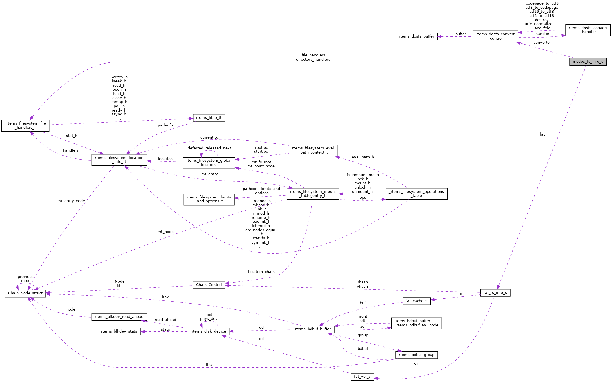

|
RTEMS
5.0.0
|
|
RTEMS
5.0.0
|
#include <msdos.h>

| uint8_t* msdos_fs_info_s::cl_buf |
Definition at line 67 of file msdos.h.
Referenced by msdos_dir_is_empty(), and msdos_find_node_by_cluster_num_in_fat_file().
| rtems_dosfs_convert_control* msdos_fs_info_s::converter |
Definition at line 72 of file msdos.h.
Referenced by msdos_find_name(), msdos_find_name_in_fat_file(), msdos_get_dotdot_dir_info_cluster_num_and_offset(), msdos_initialize_support(), and msdos_shut_down().
| const rtems_filesystem_file_handlers_r* msdos_fs_info_s::directory_handlers |
Definition at line 54 of file msdos.h.
Referenced by msdos_initialize_support().
| fat_fs_info_t msdos_fs_info_s::fat |
Definition at line 50 of file msdos.h.
Referenced by msdos_dir_is_empty(), msdos_dir_stat(), msdos_file_ftruncate(), msdos_file_stat(), msdos_file_sync(), msdos_find_name(), msdos_find_node_by_cluster_num_in_fat_file(), msdos_free_node_info(), msdos_get_dotdot_dir_info_cluster_num_and_offset(), msdos_initialize_support(), msdos_rmnod(), msdos_set_first_char4file_name(), msdos_shut_down(), msdos_statvfs(), and msdos_sync().
| const rtems_filesystem_file_handlers_r* msdos_fs_info_s::file_handlers |
Definition at line 60 of file msdos.h.
Referenced by msdos_initialize_support().
| rtems_recursive_mutex msdos_fs_info_s::vol_mutex |
 1.8.17
1.8.17